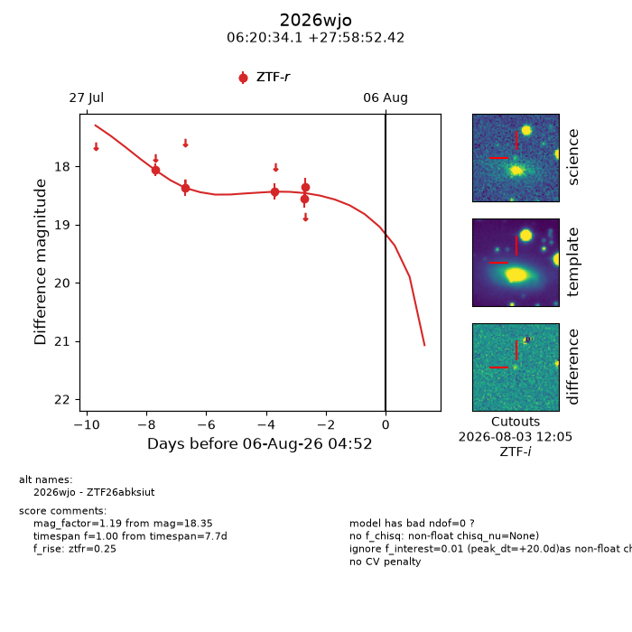
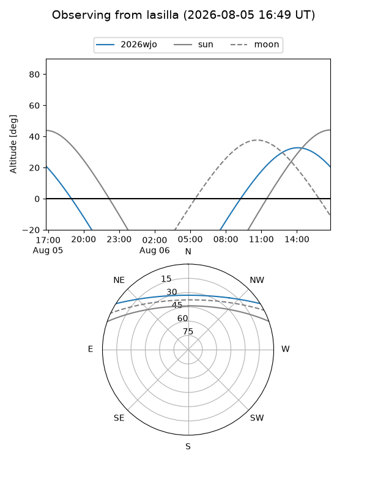
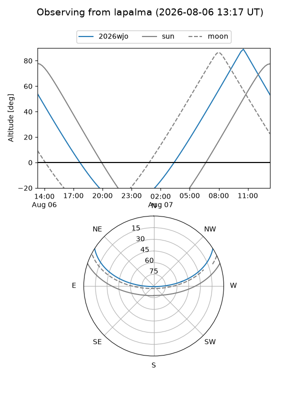
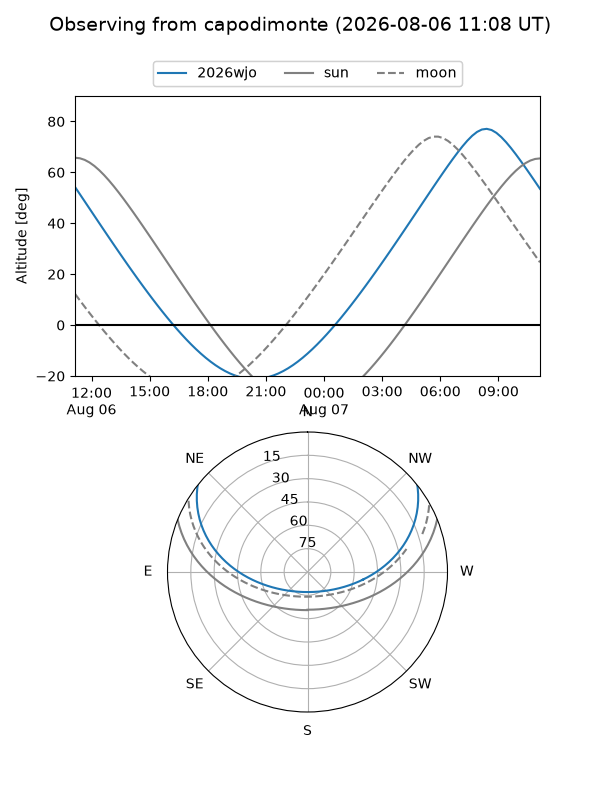
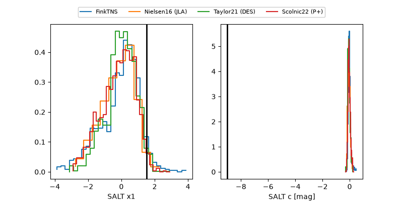

2026wjo
Target 2026wjo at 2026-08-06 16:51
Aliases and brokers:
FINK-ZTF: ztf.fink-portal.org/ZTF26abksiut
Lasair-ZTF: lasair-ztf.lsst.ac.uk/objects/ZTF26abksiut
ALeRCE-ZTF: alerce.online/object/ZTF26abksiut
YSE-PZ: ziggy.ucolick.org/yse/transient_detail/2026wjo
TNS name: wis-tns.org/object/2026wjo
Direct TNS query: direct search
alt names
ZTF26abksiut (ztf,fink_ztf)
2026wjo (tns,yse)
Coordinates:
equatorial (ra, dec) = 95.1419,+27.98123
equatorial (HMS+DMS) = 06:20:34.06,+27:58:52.42
galactic (l, b) = (184.6092,+6.22277)
Flags:
TNS type: nan
peak dt: +20.5
Photometry:
last ztfr=18.35
5 ztfr detections
Lightcurve

Visibility



Additional plots
